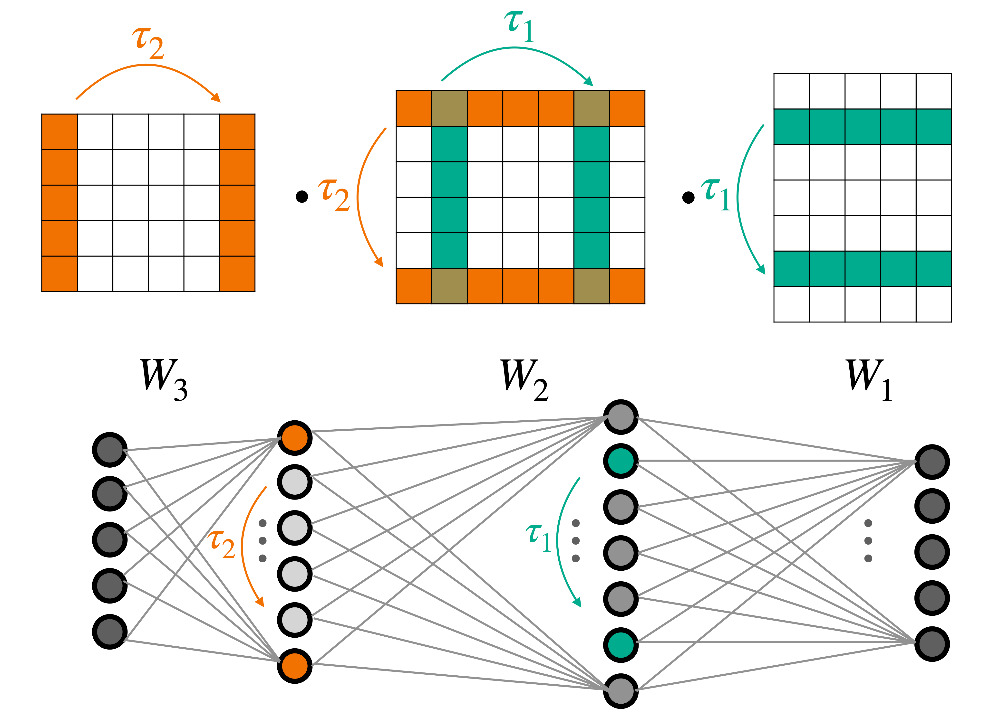
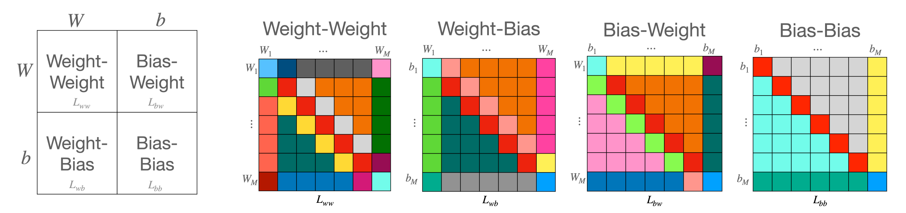
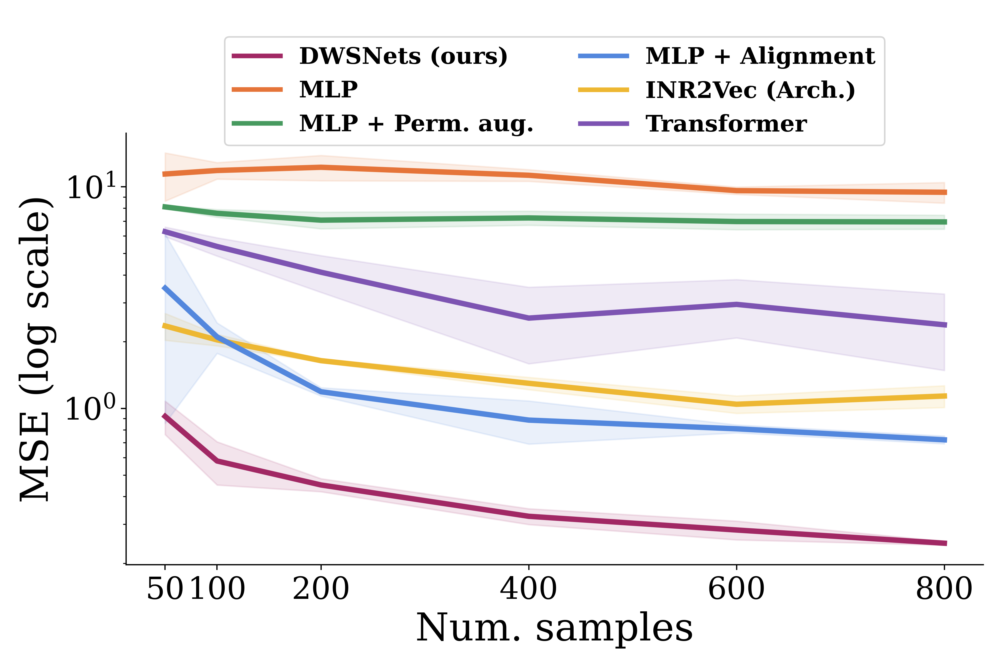
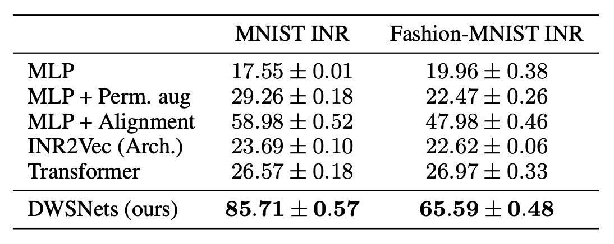
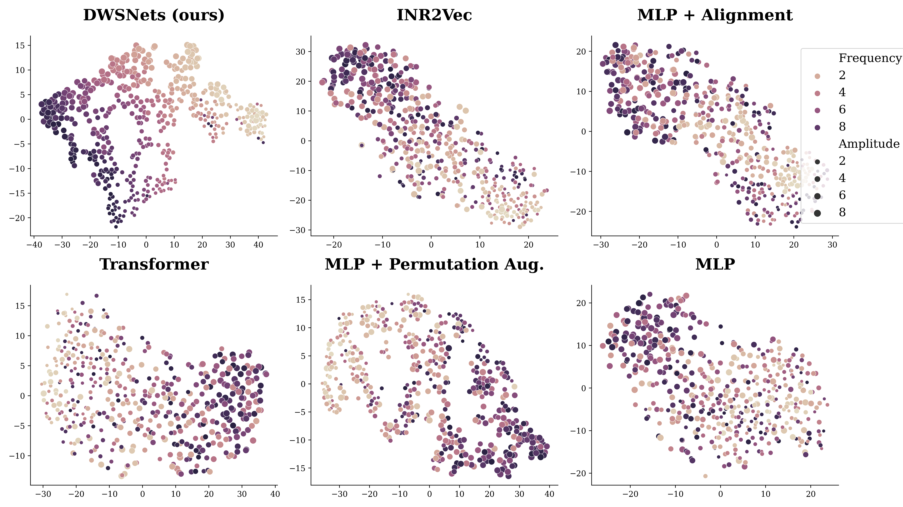

Symmetries of deep weight spaces, shown here on a $3$-layer MLP.
Designing machine learning architectures for processing neural networks in their raw weight matrix
form is a newly introduced research direction. Unfortunately, the unique symmetry structure of deep
weight spaces makes this design very challenging. If successful, such architectures would be capable
of performing a wide range of intriguing tasks, from adapting a pre-trained network to a new domain
to editing objects represented as functions (INRs or NeRFs). As a first step towards this goal, we
present here a novel network architecture for learning in deep weight spaces. It takes as input a
concatenation of weights and biases of a pre-trained MLP and processes it using a composition of
layers that are equivariant to the natural permutation symmetry of the MLP’s weights: Changing the
order of neurons in intermediate layers of the MLP does not affect the function it represents. We
provide a full characterization of all affine equivariant and invariant layers for these symmetries and
show how these layers can be implemented using three basic operations: pooling, broadcasting, and
fully connected layers applied to the input in an appropriate manner. We demonstrate the effectiveness
of our architecture and its advantages over natural baselines in a variety of learning tasks
A characterization of linear invariant and equivariant layers for weight-spaces

Block matrix structure for linear equivariant maps between weight spaces.
We address learning in spaces that represent a concatenation of weight (and bias) matrices of Multilayer Perceptrons (MLPs). We analyze the symmetry structure of neural weight spaces. Then we design architectures that are equivariant to the natural symmetries of the data. Specifically, we focus on the main type of symmetry found in the weights of MLPs: for any two consecutive internal layers of an MLP, simultaneously permuting the rows of the first layer and the columns of the second layer generates a new sequence of weight matrices that represent exactly the same underlying function. We provide a full characterization of all affine equivariant and invariant layers for these symmetries and show how these layers can be implemented using three basic operations: pooling, broadcasting, and fully connected layers applied to the input in an appropriate manner.
We term our linear equivariant layers, DWS-layers, and the architectures that use them (interleaved with pointwise nonlinearities) DWSNets (for Deep Weight-Space Networks).
Results
Regression of sine wave frequency

Sine wave regression. Test MSE (log scale) for a varying number of training examples.
To first illustrate the operation of DWSNets, we look into a regression problem. We train INRs to fit sine waves on $[-\pi, \pi]$, with different frequencies sampled from $U(0.5, 10)$. Each sine wave is represented as an MLP trained as an INR network, and the task is to have the DWSNet predict the frequency of a given test INR network. To illustrate the generalization capabilities of the architectures, we repeat the experiment by training the DWSNet with a varying number of training examples (INRs). DWSNets performs significantly better than baseline methods even with a small number of training examples.
Classification of images represented as INRs
INR classification: The class of an INR is defined by the image that it represents.

Here, INRs were trained to represent images from MNIST and Fashion-MNIST. The task is to have the DWSNet recognize the image content, like the digit in MNIST, by using the weights of these INRs as input. Table 1 shows that DWSNets outperforms all baseline methods by a large margin.
Self-supervised learning for dense representation
2D TSNE of the resulting low-dimensional space.

Here we wish to embed neural networks into a semantic coherent low dimensional space. To that end, we fit INRs on sine waves of the form a $\sin(bx)$ on $[−\pi, \pi]$. Here $a, b \sim U(0, 10)$. We use a SimCLR-like training procedure and objective, by generating random views from each INR by adding Gaussian noise and random masking. We qualitatively observe a 2D TSNE of the resulting space.
@article{
navon2023equivariant,
title={Equivariant Architectures for Learning in Deep Weight Spaces},
author={
Navon, Aviv and Shamsian, Aviv and Achituve, Idan and Fetaya,
Ethan and Chechik, Gal and Maron, Haggai
},
journal={arXiv preprint arXiv:2301.12780},
year={2023}
}